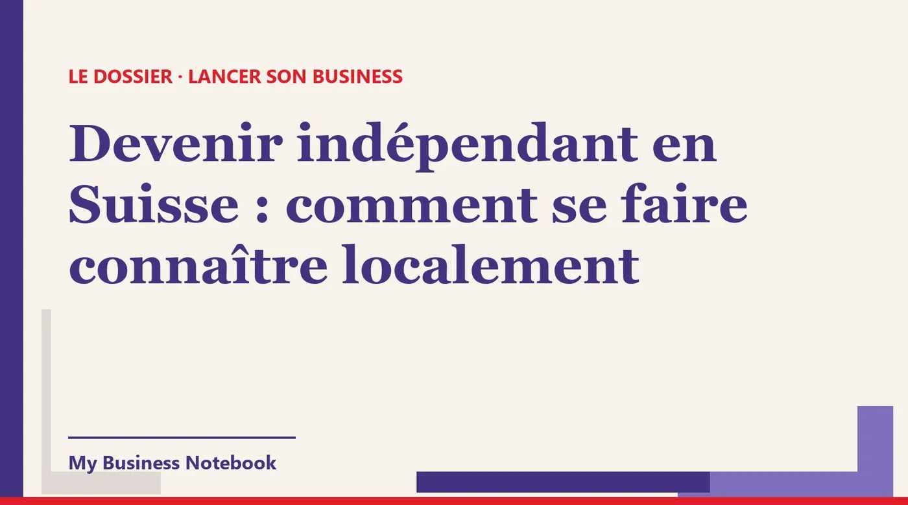

Devenir indépendant en Suisse : comment se faire connaître localement
Vous passez indépendant en Suisse romande, la raison individuelle est prête, et personne ne sait encore que vous existez. Bonne nouvelle : ce qui vous rend visible aide aussi votre statut, car l'AVS regarde si vous vous présentez comme une vraie entreprise. Voici comment exister officiellement, apparaître sur Google et dans les annuaires suisses, puis trouver vos premiers clients dans votre canton.

La réponse courte
En Suisse, un indépendant se fait connaître localement en trois temps : exister officiellement (caisse de compensation AVS, registre du commerce si besoin), être trouvable (fiche Google, local.ch, search.ch, les mêmes coordonnées partout), puis aller chercher ses clients dans sa ville et son canton.
Le détail qui change tout : pour l'AVS, se présenter publiquement comme une entreprise fait partie des critères du statut d'indépendant. Se faire connaître n'est donc pas un bonus. C'est une partie de votre installation.
Comment passer indépendant en Suisse ?
La forme la plus simple pour démarrer seul est la raison individuelle, aussi appelée entreprise individuelle. Le portail PME de la Confédération résume les étapes dans une check-list : budgéter les frais, déterminer la raison sociale, s'inscrire au registre du commerce si c'est obligatoire ou si vous le souhaitez, s'annoncer à la caisse cantonale de compensation AVS.
Viennent ensuite deux points selon votre situation. Si vous employez du personnel, il faut aussi conclure les assurances obligatoires (prévoyance professionnelle LPP et assurance accidents LAA). Si vous êtes assujetti à la TVA, vous vous inscrivez auprès de l'Administration fédérale des contributions.
Devenir indépendant : comment faire pour le registre du commerce
Une raison individuelle doit s'inscrire au registre du commerce dès CHF 100 000 de chiffre d'affaires annuel. En dessous, l'inscription est volontaire. La check-list officielle conseille de clarifier la question auprès du registre du commerce de votre canton.
Même quand elle n'est pas obligatoire, l'inscription a un intérêt pour votre visibilité : votre entreprise apparaît alors dans Zefix, l'index central des raisons de commerce, consultable en ligne. Un client professionnel qui veut vérifier que vous existez regarde souvent là.
Ce que l'AVS attend d'un indépendant (et pourquoi ça concerne votre visibilité)
Vous ne vous déclarez pas indépendant tout seul. Selon le mémento AVS 2.02, ce sont les caisses de compensation qui déterminent au cas par cas si votre activité est indépendante, d'après les conditions économiques et non d'après vos contrats.
Parmi les critères cités par le mémento, plusieurs touchent directement à la façon dont vous vous montrez :
- Vous vous présentez sous une raison sociale, publiquement, par exemple en étant inscrit au registre du commerce ou dans l'annuaire, avec votre propre papier à en-tête et votre matériel publicitaire.
- Vous travaillez pour plusieurs mandants. Avec un seul mandant, l'activité est généralement considérée comme salariée.
- Vous assumez le risque économique et organisez librement votre travail.
Autrement dit, trouver plusieurs clients et vous montrer comme une vraie entreprise vont dans le même sens que votre dossier AVS. Le formulaire de demande et les explications se trouvent sur independant-suisse.ch.
À savoir avant de vous lancer : l'indépendant n'est assuré ni contre le chômage ni contre les accidents par l'AVS, et il n'est pas soumis au régime obligatoire de la prévoyance professionnelle. Pour un revenu annuel inférieur à 10 100 francs, la cotisation minimale AVS/AI/APG est de 530 francs (mémento 2.02, état au 1er janvier 2026).
Comment référencer son entreprise sur Google gratuitement
La fiche d'établissement Google (Google Business Profile) est gratuite : Google indique qu'on peut ajouter ou revendiquer son établissement sans frais. C'est elle qui s'affiche quand quelqu'un tape « menuisier Nyon » ou « coiffeuse Fribourg ».
- Cherchez d'abord votre nom. Si une fiche existe déjà, revendiquez-la au lieu d'en créer une deuxième.
- Utilisez le nom exact de votre raison individuelle, sans ajouter de mots-clés.
- Choisissez la catégorie la plus précise possible.
- Validez la fiche. Google précise que l'examen peut prendre jusqu'à cinq jours ouvrés, et qu'un code par courrier arrive généralement sous 14 jours.
Vous travaillez chez vos clients, ou depuis chez vous ? Google permet de masquer l'adresse et d'indiquer une zone desservie. C'est utile pour un indépendant qui ne veut pas afficher son domicile. Indiquez les communes où vous vous déplacez vraiment, pas tout le canton.
Comment trouver des clients avec Google
Une fiche validée mais vide ne ramène personne. Ajoutez vos horaires, de vraies photos de votre travail, une description qui dit ce que vous faites, où, et pour qui. Puis demandez un avis à chacun de vos premiers clients satisfaits, et répondez à tous les avis.
Si vous travaillez près d'une frontière linguistique (Fribourg, Bienne, le Valais), pensez à ceux qui cherchent en allemand. Une description qui mentionne que vous servez aussi une clientèle germanophone peut vous faire gagner des contacts.
local.ch, search.ch et les autres annuaires suisses
En Suisse, beaucoup de gens cherchent encore un artisan ou un thérapeute sur local.ch ou search.ch, souvent depuis leur téléphone. Vérifiez que vous y figurez, avec les bonnes coordonnées. Si vous n'y êtes pas, inscrivez-vous, et lisez attentivement toute offre commerciale avant de signer.
Selon votre métier, d'autres listes comptent : l'association professionnelle de votre branche, les répertoires de votre commune ou de votre canton, les plateformes spécialisées de votre secteur.
La règle d'or : les mêmes coordonnées partout
Nom, adresse, numéro de téléphone : écrivez-les exactement de la même façon sur Google, sur local.ch, sur search.ch, dans Zefix et sur votre site. Un ancien numéro de portable ou une adresse écrite de deux façons brouille votre identité pour les moteurs de recherche.
Tenez un petit tableau de vos inscriptions, avec les identifiants. Le jour où vous déménagez de Lausanne à Morges, vous saurez quoi mettre à jour.
Comment se faire connaître localement en Suisse romande
La Suisse romande fonctionne beaucoup par recommandation. Les premiers clients viennent souvent du voisinage, des collègues de métier et des associations, bien avant Google.
- Présentez-vous aux indépendants complémentaires. Un électricien et un sanitaire qui se recommandent, une esthéticienne et une coiffeuse qui s'envoient des clientes : ces liens durent des années.
- Rejoignez la société de développement ou l'association des commerçants de votre commune, et participez aux marchés et fêtes locales quand votre métier s'y prête.
- Utilisez le journal communal et les panneaux d'affichage de votre quartier. C'est modeste, mais très local.
- Choisissez un seul réseau social, celui où se trouvent vos clients, et publiez régulièrement votre travail réel.
- Dites clairement à votre entourage ce que vous faites, pour qui, et comment vous joindre.
Chaque rencontre doit mener au même endroit : votre fiche Google ou votre site. Quelqu'un qui a entendu parler de vous va vérifier en ligne avant d'appeler.
Comment trouver des clients sans réseau
Si vous arrivez dans une nouvelle ville, ou si vous quittez un emploi salarié sans carnet d'adresses, la prospection directe est votre meilleur outil. Elle donne des rendez-vous rapidement, à condition d'être régulier.
- Visez une cible précise : un type d'entreprise dans une zone. « Les fiduciaires de la Riviera vaudoise » est une cible. « Toutes les PME de Suisse romande » n'en est pas une.
- Constituez une liste courte, une trentaine d'entreprises, avec un contact fiable pour chacune.
- Écrivez un message personnel de trois ou quatre phrases qui parle de leur situation, pas de vous.
- Relancez une fois, quelques jours plus tard, poliment.
Cette démarche vous aide aussi à remplir le critère des « plusieurs mandants » vu plus haut. Un indépendant qui ne travaille que pour son ancien employeur risque d'être considéré comme salarié.
Ce que dit la loi suisse sur la prospection par e-mail
La règle clé se trouve dans la loi contre la concurrence déloyale (LCD), à l'article 3, alinéa 1, lettre o. Est déloyal celui qui envoie par voie de télécommunication de la publicité de masse sans avoir requis au préalable le consentement des destinataires, sans mentionner correctement l'émetteur ou sans les informer de leur droit de s'y opposer gratuitement et facilement.
La même lettre prévoit une exception : si vous avez obtenu les coordonnées de vos clients lors d'une vente et leur avez indiqué qu'ils pouvaient s'y opposer, vous pouvez leur envoyer de la publicité pour des produits ou services semblables. Le Préposé fédéral à la protection des données (PFPDT) rappelle aussi que chaque message publicitaire doit indiquer l'expéditeur et proposer un moyen simple et gratuit de refuser les envois suivants.
En pratique, pour un indépendant qui démarre : pas d'envois en masse à des listes achetées. Écrivez des messages individuels, peu nombreux, adaptés à chaque entreprise. Présentez-vous clairement, et laissez toujours une façon simple de dire « non merci ».
L'outil qui tient tout ça à jour pour vous
Tout ce qui précède peut se faire à la main. Le problème, c'est le temps : un indépendant qui démarre facture, livre, gère sa caisse de compensation, et n'a plus d'énergie pour tenir ses annuaires et ses relances. C'est pour ça que nous recommandons Kaptor, une plateforme pensée pour les entreprises qui se lancent.
Kaptor
Kaptor réunit la visibilité et la prospection dans un seul espace :
- Visibilité : votre entreprise inscrite sur les annuaires qui comptent pour votre pays et votre métier (plus de 120 référencements), avec les mêmes coordonnées partout, un suivi fiche par fiche et une alerte quand une information est périmée.
- Fiche Google : aide à la créer ou à la revendiquer, signalement des champs manquants, aide pour solliciter et suivre les avis.
- Prospection : des entreprises à contacter par métier et par zone (votre ville, votre région, ou un autre pays), avec leurs coordonnées, classées par l'IA de la plus chaude à la plus froide, et un suivi de « à contacter » à « gagné ».
- E-mails : envoyés depuis votre propre adresse ou votre domaine, relances automatiques, lien de désinscription inclus, réponses regroupées. Rien ne part sans votre validation.
- Site vitrine ou blog : pas de site ? Kaptor en génère un, avec formulaire de contact. Déjà un site ? Il génère un blog qui renvoie vers lui.
On crée son espace gratuitement pour essayer. Les forfaits payants démarrent ensuite à 89 $ par mois (facturés en dollars américains), sans engagement.
Vos clients vous trouvent-ils sur les annuaires suisses ?
L'audit gratuit de Kaptor cherche votre entreprise sur les annuaires de votre pays et vous montre où vous êtes présent, et où vous manquez. Sans carte bancaire, sans inscription. Kaptor peut ensuite soumettre les fiches manquantes et les garder à jour.
Lancer mon audit gratuitPour aller plus loin : notre méthode détaillée pour trouver des clients quand on démarre sans réseau.
Questions fréquentes
Devenir indépendant : comment faire en Suisse ?
Pour une raison individuelle : déterminer la raison sociale, s'inscrire au registre du commerce si c'est obligatoire (dès CHF 100 000 de chiffre d'affaires annuel) ou si vous le souhaitez, et s'annoncer à la caisse cantonale de compensation AVS. C'est elle qui reconnaît ou non votre statut d'indépendant.
Faut-il s'inscrire au registre du commerce pour être indépendant ?
Pas forcément. L'inscription est obligatoire pour une raison individuelle dès CHF 100 000 de chiffre d'affaires annuel, volontaire en dessous. Elle rend votre entreprise visible dans Zefix, ce qui rassure les clients professionnels.
Comment se faire connaître localement quand on est indépendant ?
Soyez trouvable d'abord (fiche Google validée, local.ch, search.ch, mêmes coordonnées partout), puis allez vers les gens : indépendants complémentaires, association des commerçants de votre commune, journal communal, un réseau social tenu régulièrement.
Comment référencer son entreprise sur Google gratuitement ?
Créez ou revendiquez votre fiche Google Business Profile, qui est gratuite, choisissez une catégorie précise et validez-la. L'examen peut prendre jusqu'à cinq jours ouvrés. Si vous travaillez chez vos clients, masquez votre adresse et indiquez une zone desservie.
A-t-on le droit d'envoyer des e-mails de prospection en Suisse ?
La LCD interdit la publicité de masse par voie de télécommunication sans consentement préalable, sans identification de l'expéditeur ou sans moyen simple et gratuit de s'y opposer. Privilégiez des messages individuels et personnalisés, identifiez-vous et proposez toujours de refuser les envois suivants.
Comment trouver des clients sans réseau ?
Choisissez une cible précise (un type d'entreprise dans une zone), faites une liste d'une trentaine de contacts, écrivez un message court et personnel, relancez une fois. Avoir plusieurs clients compte aussi pour l'AVS, qui considère en général qu'un seul mandant indique une activité salariée.
Sources officielles
- Portail PME de la Confédération : check-list création d'une entreprise individuelle : raison sociale, registre du commerce, caisse de compensation AVS, TVA.
- Portail PME de la Confédération : le registre du commerce, son fonctionnement : seuil de CHF 100 000 pour les raisons individuelles, FOSC, Zefix.
- Mémento AVS/AI 2.02 : cotisations des indépendants (état au 1er janvier 2026) : critères du statut d'indépendant, cotisation minimale.
- Fedlex : loi fédérale contre la concurrence déloyale (LCD), art. 3, al. 1, let. o : publicité de masse par télécommunication.
- PFPDT : publicité et marketing : consentement, exception clients, identification de l'expéditeur, droit de refuser.
- Aide Google Business Profile : ajouter ou revendiquer son établissement : la fiche est gratuite.
- Aide Google Business Profile : valider son établissement : méthodes de validation et délais.
- Aide Google Business Profile : gérer sa zone desservie : masquer son adresse quand on se déplace chez le client.
- Comment rendre son entreprise visible sur Google en Belgique (en français et en néerlandais)
- Indépendant complémentaire : comment trouver des clients avec quelques heures par semaine
- Comment se faire connaître quand on ouvre une entreprise : le plan des 30 premiers jours
- Travailleur autonome au Québec : comment se faire connaître et décrocher ses premiers clients
- Auto-entrepreneur : comment trouver des clients quand on n'a pas de réseau
- Trouver des clients avec l'IA : ce qui marche vraiment pour une petite entreprise